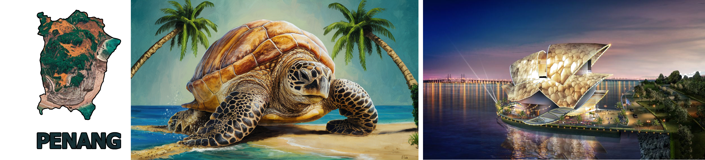
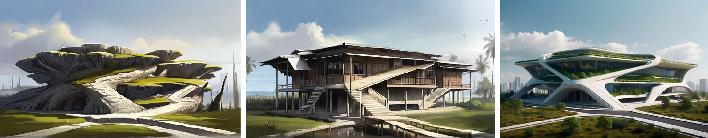

Creative Process
Normally the creative professionals in architecture would be to find some thing related to Penang Island to draw inspiration from. For example, Penang island might be shaped like a turtle, or turtles are part of the Penang ecosystem as an island. From there, the architect creates a building like a turtle as shown here.

Here we have the design of our building. But if we can add or give it a creative process story, it would make it a lot more interesting, just like how Steve Jobs presented the iPhone. One way we can do this, is we can reverse the process. We have our design, and we can say is related or took inspiration from a combination of a kampong design and the roots of a tree. We can say while I am walking home from school, I noticed this tree stump with big roots in front of a kampong house, and I was thinking of the idea if I can combine these two concepts together.
See if you can sketch out a rough drawing of a kampong house and a sketch of a tree trunk with big roots to make your presentation more compelling.